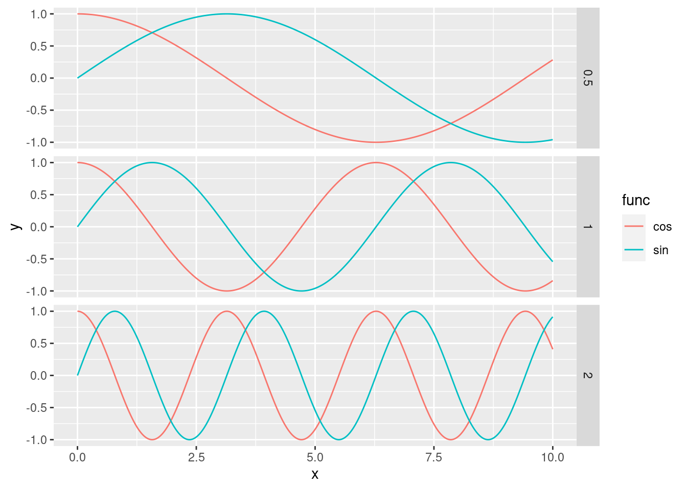

5 Data Frames and Plotting
In this chapter, we will delve into the world of Data Frames and Plotting. These are crucial concepts in Computational Mathematics that will enable us to handle and visualize data effectively.
5.0.0.1 A note for R users.
Before we start, we will need to import a very important library for writing modern R code.
This is the tidyverse…
library(tidyverse)We should also discuss about a very important operator, the pipe operator, that, as you will see, it will enable us to concatenate functions on data frames and mutate and access their variables or rows with extreme ease compared to traditional R code.
5.1 Data Frames
A data frame is a table-like data structure available in languages like R and Python. It is similar to a spreadsheet or SQL table, or a dictionary of Series objects in Python. Data frames are generally used for statistical analysis in R and Python programming.
In a data frame, the columns are named vectors, each containing a particular type of data (numeric, string, date, time). Unlike a matrix where every element must have the same data type, a data frame allows each column to have a different data type. This makes data frames more flexible for data analysis tasks where we often deal with data that have heterogeneous types. The columns of a data frame are often referred to as variables or features in statistics. In the context of mathematics or physics, these could be considered as parameters or attributes. The rows of the data frame correspond to a single observation across these variables.
5.1.1 Constructing and Accessing Data Frames
Let's start by constructing a data frame. We'll use a dataset of different types of non-dairy milks, with their respective nutritional contents:
| Milk Type | Calories | Protein (g) | Fiber (g) | Carbohydrates (g) | Sugars (g) | Fats (g) |
|---|---|---|---|---|---|---|
| Almond | 60 | 1 | 1 | 8 | 7 | 2.5 |
| Soy | 100 | 7 | 2 | 10 | NA | 4 |
| Oat | 120 | 3 | NA | 20 | 19 | 2.5 |
| Rice | 130 | 1 | NA | 25 | NA | 2.5 |
In this dataset, the first column will be a character column, to indicate the type of the milk, whilst the others will be numericals.
Furthemore, the “Fiber” and “Sugars” columns for Soy, Oat and Rice milk have NA values, indicating missing or not applicable data.
This is often the case in real data, where usually information will not be available to us in the best way as possible.
In this case, R and python will just tell us that we have a “Not Applicable (NA)” or “Not a Number (NaN)” unknown value.
Now, let’s see how we can create this data frame in R and Python:
R
# Creating a data frame in R
milk_df <- tibble(
Milk_Type = c("Almond", "Soy", "Oat", "Rice"),
Calories = c(60, 100, 120, 130),
Protein = c(1, 7, 3, 1),
Fiber = c(1, 2, NA, NA),
Carbohydrates = c(8, 10, 20, 25),
Sugars = c(7, NA, 19, NA),
Fats = c(2.5, 4, 2.5, 2.5)
)
print(milk_df)## # A tibble: 4 × 7
## Milk_Type Calories Protein Fiber Carbohydrates Sugars
## <chr> <dbl> <dbl> <dbl> <dbl> <dbl>
## 1 Almond 60 1 1 8 7
## 2 Soy 100 7 2 10 NA
## 3 Oat 120 3 NA 20 19
## 4 Rice 130 1 NA 25 NA
## # ℹ 1 more variable: Fats <dbl>python
# Creating a data frame in Python
data = {
'Milk_Type': ['Almond', 'Soy', 'Oat', 'Rice'],
'Calories': [60, 100, 120, 130],
'Protein': [1, 7, 3, 1],
'Fiber': [1, 2, np.nan, np.nan],
'Carbohydrates': [8, 10, 20, 25],
'Sugars': [7, np.nan, 19, np.nan],
'Fats': [2.5, 4, 2.5, 2.5]
}
milk_df = pd.DataFrame(data)
print(milk_df)## Milk_Type Calories Protein Fiber Carbohydrates Sugars Fats
## 0 Almond 60 1 1.0 8 7.0 2.5
## 1 Soy 100 7 2.0 10 NaN 4.0
## 2 Oat 120 3 NaN 20 19.0 2.5
## 3 Rice 130 1 NaN 25 NaN 2.5Accessing Variables To access individual variables (columns) of the data frame, we can use the $ operator in R and the [] operator in Python:
R
# Accessing the 'Calories' column in R
milk_df$Calories## [1] 60 100 120 130python
# Accessing the 'Calories' column in Python
milk_df['Calories']## 0 60
## 1 100
## 2 120
## 3 130
## Name: Calories, dtype: int64This will return the relative column, which, note, in R is returned as a vector, while in python as a column of a data frame.
NOTE for R users. In R, we use the select() function from the tidyverse package to select columns.
# Using the select() function in R
milk_df |> select(Calories)## # A tibble: 4 × 1
## Calories
## <dbl>
## 1 60
## 2 100
## 3 120
## 4 130Recall that the pipe operator (|>) is used to chain operations together, so it will take whatever we have at the left, and use it as a first argument to the function to the right. The above R code is equivalent to select(milk_df, Calories). Note, select will return the column as a vector of a data frame. Sometimes this can be better, as you might not want to change the type of your objects inadvertently during execution.
To access multiple variables at the same time, we can pass a vector of variable names:
R
# Accessing the 'Calories' and 'Protein' columns in R and storing it
# in a new variable
calories_protein <- milk_df |> select(Calories, Protein)
calories_protein## # A tibble: 4 × 2
## Calories Protein
## <dbl> <dbl>
## 1 60 1
## 2 100 7
## 3 120 3
## 4 130 1python
# Accessing the 'Calories' and 'Protein' columns in Python and storing it
# in a new variable
calories_protein = milk_df[['Calories', 'Protein']]
calories_protein## Calories Protein
## 0 60 1
## 1 100 7
## 2 120 3
## 3 130 1Note that once we access (and store, as in this second example) a subset of a data frame, we get out another data frame.
Accessing rows. To access individual rows in the data frames, we can use indexing. Similarly to vectors, to access multiple rows at the same time, we can pass a vector of row indices:
R
# Accessing the first row in R
milk_df[1, ]## # A tibble: 1 × 7
## Milk_Type Calories Protein Fiber Carbohydrates Sugars
## <chr> <dbl> <dbl> <dbl> <dbl> <dbl>
## 1 Almond 60 1 1 8 7
## # ℹ 1 more variable: Fats <dbl># Accessing the first and second rows in R
milk_df[1:2, ]## # A tibble: 2 × 7
## Milk_Type Calories Protein Fiber Carbohydrates Sugars
## <chr> <dbl> <dbl> <dbl> <dbl> <dbl>
## 1 Almond 60 1 1 8 7
## 2 Soy 100 7 2 10 NA
## # ℹ 1 more variable: Fats <dbl>python
# Accessing the first row in Python
milk_df.iloc[0]## Milk_Type Almond
## Calories 60
## Protein 1
## Fiber 1.0
## Carbohydrates 8
## Sugars 7.0
## Fats 2.5
## Name: 0, dtype: object# Accessing the first and second rows in Python
milk_df.iloc[0:2]## Milk_Type Calories Protein Fiber Carbohydrates Sugars Fats
## 0 Almond 60 1 1.0 8 7.0 2.5
## 1 Soy 100 7 2.0 10 NaN 4.0In R, when we use [1:2, ] on a data frame, we are working with a two-dimensional object. The 1:2 represents the row indices that we want to select, and the empty space after the comma indicates that we want to select all columns. So, [1:2, ] will select the first two rows and all columns of the data frame. This is different from selecting a vector because a vector is a one-dimensional object, and we only need to specify the indices of the elements we want to select.
In Python, when we use .iloc[0:2] on a data frame, we are working with a two-dimensional object. The 0:2 represents the row indices that we want to select, and the absence of a second argument after the comma indicates that we want to select all columns. So, .iloc[0:2] will select the first two rows and all columns of the data frame. This is different from selecting elements from a vector because a list is a one-dimensional object, and we only need to specify the indices of the elements we want to select. Note also that when accessing only one row, in python, the returned element will be reshaped into a column vector.
Having said that, we can also access a subset of the data frame by specifying both rows and columns simultaneously:
R
# Accessing a subset of the data frame in R
subset_df <- milk_df[1:2, c("Milk_Type", "Calories", "Protein")]
# alternatively
# subset_df <- milk_df[1:2, 1:3]
subset_df## # A tibble: 2 × 3
## Milk_Type Calories Protein
## <chr> <dbl> <dbl>
## 1 Almond 60 1
## 2 Soy 100 7python
# Accessing a subset of the data frame in Python
subset_df = milk_df.loc[0:2, ["Milk_Type", "Calories", "Protein"]]
# alternatively
# subset_df = milk_df.iloc[0:2, [0, 1, 2]]
subset_df## Milk_Type Calories Protein
## 0 Almond 60 1
## 1 Soy 100 7
## 2 Oat 120 3NOTE for Python users: Be careful, in this second statement we used an even different function, loc. In pandas, loc and iloc are two ways to select data from a DataFrame, called indexers.
The loc indexer is used with the actual labels of the index or columns. On the other hand, iloc is used for indexing by integer position. This means that you’re referring to the row or column by its position in the DataFrame (like the index in a vector), not by its label. In summary, use loc when you want to refer to items by their label and iloc when you want to refer to them by their integer position.
Overwriting Elements We can, of course, overwrite and change elements of our data frames. For instance, the simplest thing we could do at the moment, is to fill in the missing values of our data frame for our column “Fibers”.
R
# Imputing missing values in R
# overwriting the original dataset
milk_df$Fiber[is.na(milk_df$Fiber)] <- c(1.2, 0.7)
milk_df## # A tibble: 4 × 7
## Milk_Type Calories Protein Fiber Carbohydrates Sugars
## <chr> <dbl> <dbl> <dbl> <dbl> <dbl>
## 1 Almond 60 1 1 8 7
## 2 Soy 100 7 2 10 NA
## 3 Oat 120 3 1.2 20 19
## 4 Rice 130 1 0.7 25 NA
## # ℹ 1 more variable: Fats <dbl>python
# Imputing missing values in Python
# overwriting the original dataset
milk_df.loc[np.isnan(milk_df['Fiber']), 'Fiber'] = [1.2, 0.7]
milk_df## Milk_Type Calories Protein Fiber Carbohydrates Sugars Fats
## 0 Almond 60 1 1.0 8 7.0 2.5
## 1 Soy 100 7 2.0 10 NaN 4.0
## 2 Oat 120 3 1.2 20 19.0 2.5
## 3 Rice 130 1 0.7 25 NaN 2.5Note that, to impute the missing values, we can also use the replace_na() function in R and the fillna() function in Python, but these functions will overwrite all NAs in the dataset, leaving little to no flexibility.
5.1.1.1 Accessing Information about the Data Frame
We can access various information about the data frame, such as its dimensions, number of rows, number of columns, column names, and a summary of its contents, with a lot of different functions. These will be not explained in detail, but can be useful for a lot of reasons related to exploratory analysis.
R
# Accessing information about the data frame in R
# dimensions
dim(milk_df)## [1] 4 7# number of rows and columns
nrow(milk_df)## [1] 4ncol(milk_df)## [1] 7# variable names
colnames(milk_df)## [1] "Milk_Type" "Calories" "Protein"
## [4] "Fiber" "Carbohydrates" "Sugars"
## [7] "Fats"# summary statistics
summary(milk_df)## Milk_Type Calories Protein
## Length:4 Min. : 60.0 Min. :1
## Class :character 1st Qu.: 90.0 1st Qu.:1
## Mode :character Median :110.0 Median :2
## Mean :102.5 Mean :3
## 3rd Qu.:122.5 3rd Qu.:4
## Max. :130.0 Max. :7
##
## Fiber Carbohydrates Sugars
## Min. :0.700 Min. : 8.00 Min. : 7
## 1st Qu.:0.925 1st Qu.: 9.50 1st Qu.:10
## Median :1.100 Median :15.00 Median :13
## Mean :1.225 Mean :15.75 Mean :13
## 3rd Qu.:1.400 3rd Qu.:21.25 3rd Qu.:16
## Max. :2.000 Max. :25.00 Max. :19
## NA's :2
## Fats
## Min. :2.500
## 1st Qu.:2.500
## Median :2.500
## Mean :2.875
## 3rd Qu.:2.875
## Max. :4.000
## python
# Accessing information about the data frame in Python
# dimensions
milk_df.shape## (4, 7)# number of rows and columns
len(milk_df)## 4len(milk_df.columns) # or milk_df.shape[1]## 7# variable names
milk_df.columns## Index(['Milk_Type', 'Calories', 'Protein', 'Fiber', 'Carbohydrates', 'Sugars',
## 'Fats'],
## dtype='object')# summary statistics
milk_df.describe()## Calories Protein Fiber Carbohydrates Sugars Fats
## count 4.000000 4.000000 4.000000 4.000000 2.000000 4.000
## mean 102.500000 3.000000 1.225000 15.750000 13.000000 2.875
## std 30.956959 2.828427 0.556028 8.098354 8.485281 0.750
## min 60.000000 1.000000 0.700000 8.000000 7.000000 2.500
## 25% 90.000000 1.000000 0.925000 9.500000 10.000000 2.500
## 50% 110.000000 2.000000 1.100000 15.000000 13.000000 2.500
## 75% 122.500000 4.000000 1.400000 21.250000 16.000000 2.875
## max 130.000000 7.000000 2.000000 25.000000 19.000000 4.000Based on the information above, how would you access the last 5 rows and the last 2 columns of your data frame?
5.1.2 Manipulating Data Frames
When working with data in R or Python, most of the time we need to perform some data manipulation. This could involve modifying our data frame, accessing specific parts of it that are of interest, or creating new variables based on existing ones. Fortunately, both R and Python provide a set of powerful functions for these tasks.
In R, we have filter(), arrange(), select(), and mutate(). In Python, we have query, sort_values, loc or iloc, and assign. We will now explore each of these functions in detail.
5.1.2.1 Adding New Columns
Adding new columns allows us to easily add new columns that are functions of existing ones. In R, we use mutate(), and in Python, we use assign.
R
# Compute percentage of sugars over carbohydrates in R
# Then, adding the total weight of the components and computing the
# protein content
milk_df <- milk_df |> mutate(sugar_percent = (Sugars / Carbohydrates) * 100,
tot_wei = Protein + Fiber + Carbohydrates + Fats,
protein_content = Protein / tot_wei * 100)
milk_df## # A tibble: 4 × 10
## Milk_Type Calories Protein Fiber Carbohydrates Sugars
## <chr> <dbl> <dbl> <dbl> <dbl> <dbl>
## 1 Almond 60 1 1 8 7
## 2 Soy 100 7 2 10 NA
## 3 Oat 120 3 1.2 20 19
## 4 Rice 130 1 0.7 25 NA
## # ℹ 4 more variables: Fats <dbl>, sugar_percent <dbl>,
## # tot_wei <dbl>, protein_content <dbl>python
# Compute percentage of sugars over carbohydrates in Python
# Then, adding the total weight of the components and computing the
# protein content
milk_df = milk_df.assign(
sugar_percent = lambda df: (df['Sugars'] / df['Carbohydrates']) * 100,
tot_wei = lambda df: df['Protein'] + df['Fiber'] + df['Carbohydrates'] + df['Fats'],
protein_content = lambda df: df['Protein'] / df['tot_wei'] * 100
)
milk_df## Milk_Type Calories Protein Fiber Carbohydrates Sugars Fats sugar_percent tot_wei protein_content
## 0 Almond 60 1 1.0 8 7.0 2.5 87.5 12.5 8.000000
## 1 Soy 100 7 2.0 10 NaN 4.0 NaN 23.0 30.434783
## 2 Oat 120 3 1.2 20 19.0 2.5 95.0 26.7 11.235955
## 3 Rice 130 1 0.7 25 NaN 2.5 NaN 29.2 3.424658The advantage of using mutate and assign over directly overwriting columns is that those function allow you to reference other columns that are being created within the same call. This makes it possible to create multiple interdependent columns in one go. In contrast, when overwriting columns directly, you would have to create each new column one at a time, which could be less efficient and harder to read.
If we had to do the same code manually, each one at a time, this would have looked like the following:
R
### equivalent to above statement
# Compute percentage of sugars over carbohydrates in R
milk_df$sugar_percent <- (milk_df$Sugars / milk_df$Carbohydrates) * 100
# Then, adding the total weight of the components
milk_df$tot_wei <- milk_df$Protein + milk_df$Fiber + milk_df$Carbohydrates + milk_df$Fats
# Finally, computing the protein content
milk_df$protein_content = milk_df$Protein / milk_df$tot_wei * 100
milk_df## # A tibble: 4 × 10
## Milk_Type Calories Protein Fiber Carbohydrates Sugars
## <chr> <dbl> <dbl> <dbl> <dbl> <dbl>
## 1 Almond 60 1 1 8 7
## 2 Soy 100 7 2 10 NA
## 3 Oat 120 3 1.2 20 19
## 4 Rice 130 1 0.7 25 NA
## # ℹ 4 more variables: Fats <dbl>, sugar_percent <dbl>,
## # tot_wei <dbl>, protein_content <dbl>python
### equivalent to above statement
# Compute percentage of sugars over carbohydrates in Python
milk_df['sugar_percent'] = (milk_df['Sugars'] / milk_df['Carbohydrates']) * 100
# Then, adding the total weight of the components
milk_df['tot_wei'] = milk_df['Protein'] + milk_df['Fiber'] + milk_df['Carbohydrates'] + milk_df['Fats']
# Finally, computing the protein content
milk_df['protein_content'] = milk_df['Protein'] / milk_df['tot_wei'] * 100
milk_df## Milk_Type Calories Protein Fiber Carbohydrates Sugars Fats sugar_percent tot_wei protein_content
## 0 Almond 60 1 1.0 8 7.0 2.5 87.5 12.5 8.000000
## 1 Soy 100 7 2.0 10 NaN 4.0 NaN 23.0 30.434783
## 2 Oat 120 3 1.2 20 19.0 2.5 95.0 26.7 11.235955
## 3 Rice 130 1 0.7 25 NaN 2.5 NaN 29.2 3.424658You can see how this makes the code longer and potentially harder to read. However, it can be useful when the computation of each new column depends on the columns added in the previous steps.
Note also how, over the rows of soy and rice, the sugar_percent column has missing values, and similarly the protein_content variable has skewed values: this is because the value of the sugar content was missing originally. Be careful about missing values!
5.1.2.2 Filtering Rows
Filtering allows us to focus on a subset of the rows of a data frame. This is based on the result of a vectorised logic expression. In a way, we have already seen this in the past when selecting subsets of vectors! In R, we use filter(), and in Python, we use query().
R
# Filtering rows where Calories is greater than 100 in R
milk_df |> filter(Calories > 100)## # A tibble: 2 × 10
## Milk_Type Calories Protein Fiber Carbohydrates Sugars
## <chr> <dbl> <dbl> <dbl> <dbl> <dbl>
## 1 Oat 120 3 1.2 20 19
## 2 Rice 130 1 0.7 25 NA
## # ℹ 4 more variables: Fats <dbl>, sugar_percent <dbl>,
## # tot_wei <dbl>, protein_content <dbl>python
# Filtering rows where Calories is greater than 100 in Python
milk_df.query('Calories > 100')## Milk_Type Calories Protein Fiber Carbohydrates Sugars Fats sugar_percent tot_wei protein_content
## 2 Oat 120 3 1.2 20 19.0 2.5 95.0 26.7 11.235955
## 3 Rice 130 1 0.7 25 NaN 2.5 NaN 29.2 3.4246585.1.2.3 Reordering Rows
Reordering allows us to arrange the rows in the data frame in a specific order. In R, we use arrange(), and in Python, we use sort_values().
R
# Arranging rows by decreasing sugar_percent in R
milk_df <- milk_df |> arrange(desc(sugar_percent))
milk_df## # A tibble: 4 × 10
## Milk_Type Calories Protein Fiber Carbohydrates Sugars
## <chr> <dbl> <dbl> <dbl> <dbl> <dbl>
## 1 Oat 120 3 1.2 20 19
## 2 Almond 60 1 1 8 7
## 3 Soy 100 7 2 10 NA
## 4 Rice 130 1 0.7 25 NA
## # ℹ 4 more variables: Fats <dbl>, sugar_percent <dbl>,
## # tot_wei <dbl>, protein_content <dbl>python
# Arranging rows by decreasing sugar_percent in Python
milk_df = milk_df.sort_values('sugar_percent', ascending=False)
milk_df## Milk_Type Calories Protein Fiber Carbohydrates Sugars Fats sugar_percent tot_wei protein_content
## 2 Oat 120 3 1.2 20 19.0 2.5 95.0 26.7 11.235955
## 0 Almond 60 1 1.0 8 7.0 2.5 87.5 12.5 8.000000
## 1 Soy 100 7 2.0 10 NaN 4.0 NaN 23.0 30.434783
## 3 Rice 130 1 0.7 25 NaN 2.5 NaN 29.2 3.424658These examples show the power of modern R and Python for data manipulation! By understanding these functions, we can perform complex data manipulations with just a few lines of code.
5.1.3 A Real Data Frame
Now that we have the basis of manipulating data frames, before proceeding to the next steps, let’s work with a real-world data frame: mtcars! This data frame is available in both R (natively) and Python (in plotnine.data.mtcars) and contains various car attributes. However, to simulate a real world scenario, we’ll see how to import it from a csv file.
5.1.3.1 Importing the Data Frame
First, let’s import the mtcars data frame. You’ll need to download this from Moodle, and save it under your working directory as “mtcars.csv”. Remember that we learned how to read from CSV files in week 1! Well, this is the first time we are doing this in a practical sense.
R
# Importing the data frame in R
mtcars <- read.csv("mtcars.csv")python
# Importing the data frame in Python
import pandas as pd
mtcars = pd.read_csv("mtcars.csv")5.1.3.2 Understanding the Data Frames
The mtcars data frame contains the following columns:
mpg: Miles/(US) galloncyl: Number of cylindersdisp: Displacement (cu.in.)hp: Gross horsepowerdrat: Rear axle ratiowt: Weight (1000 lbs)qsec: 1/4 mile timevs: Engine (0 = V-shaped, 1 = straight)am: Transmission (0 = automatic, 1 = manual)gear: Number of forward gearscarb: Number of carburetors
5.1.3.3 Displaying the First Few Values
We can display the first few values of the data frame using the head() function in R and Python.
R
# Displaying the first few values in R
head(mtcars)## mpg cyl disp hp drat wt qsec vs am gear carb
## 1 21.0 6 160 110 3.90 2.620 16.46 0 1 4 4
## 2 21.0 6 160 110 3.90 2.875 17.02 0 1 4 4
## 3 22.8 4 108 93 3.85 2.320 18.61 1 1 4 1
## 4 21.4 6 258 110 3.08 3.215 19.44 1 0 3 1
## 5 18.7 8 360 175 3.15 3.440 17.02 0 0 3 2
## 6 18.1 6 225 105 2.76 3.460 20.22 1 0 3 1python
# Displaying the first few values in Python
mtcars.head()## mpg cyl disp hp drat wt qsec vs am gear carb
## 0 21.0 6 160.0 110 3.90 2.620 16.46 0 1 4 4
## 1 21.0 6 160.0 110 3.90 2.875 17.02 0 1 4 4
## 2 22.8 4 108.0 93 3.85 2.320 18.61 1 1 4 1
## 3 21.4 6 258.0 110 3.08 3.215 19.44 1 0 3 1
## 4 18.7 8 360.0 175 3.15 3.440 17.02 0 0 3 2In RStudio, you can also explore the data frame via the View() function. This opens the data frame in a spreadsheet-like view, which can be very useful for getting a sense of the data.
5.1.3.4 Factor Variables
In R, a factor is a variable that can take on a limited number of distinct values, such as ‘yes’ and ‘no’. It’s used to store categorical data. In Python, we use the category data type for similar purposes.
In the mtcars data frame, the vs and am columns are currently integers, but they represent categorical data. Therefore, we should convert them to factors in R or categories in Python.
Here’s how we can do this:
R
# Converting to factors in R
mtcars$vs <- as.factor(mtcars$vs)
mtcars$am <- as.factor(mtcars$am)
# Checking the conversion
str(mtcars)## 'data.frame': 32 obs. of 11 variables:
## $ mpg : num 21 21 22.8 21.4 18.7 18.1 14.3 24.4 22.8 19.2 ...
## $ cyl : int 6 6 4 6 8 6 8 4 4 6 ...
## $ disp: num 160 160 108 258 360 ...
## $ hp : int 110 110 93 110 175 105 245 62 95 123 ...
## $ drat: num 3.9 3.9 3.85 3.08 3.15 2.76 3.21 3.69 3.92 3.92 ...
## $ wt : num 2.62 2.88 2.32 3.21 3.44 ...
## $ qsec: num 16.5 17 18.6 19.4 17 ...
## $ vs : Factor w/ 2 levels "0","1": 1 1 2 2 1 2 1 2 2 2 ...
## $ am : Factor w/ 2 levels "0","1": 2 2 2 1 1 1 1 1 1 1 ...
## $ gear: int 4 4 4 3 3 3 3 4 4 4 ...
## $ carb: int 4 4 1 1 2 1 4 2 2 4 ...python
# Converting to categories in Python
mtcars['vs'] = mtcars['vs'].astype('category')
mtcars['am'] = mtcars['am'].astype('category')
# Checking the conversion
mtcars.info()## <class 'pandas.core.frame.DataFrame'>
## RangeIndex: 32 entries, 0 to 31
## Data columns (total 11 columns):
## # Column Non-Null Count Dtype
## --- ------ -------------- -----
## 0 mpg 32 non-null float64
## 1 cyl 32 non-null int64
## 2 disp 32 non-null float64
## 3 hp 32 non-null int64
## 4 drat 32 non-null float64
## 5 wt 32 non-null float64
## 6 qsec 32 non-null float64
## 7 vs 32 non-null category
## 8 am 32 non-null category
## 9 gear 32 non-null int64
## 10 carb 32 non-null int64
## dtypes: category(2), float64(5), int64(4)
## memory usage: 2.7 KBThis code converts the vs and am columns to factors or categories and then checks that the conversion was successful. By correctly representing these columns as categorical variables, we can perform more appropriate statistical analyses and get more meaningful insights from our data.
5.2 Plotting with ggplot
5.2.3 Exercise: ggplots of periodic functions
In this exercises we will be plotting few sine and cosine waves. This should combine both knowledge of creating a data frame, and ggplot. The exercise has various levels of completition, from a basic level where we will be plotting a sine function from 1 to 10, to an advance level where we will be displaying multiple periodic functions.
Basic. Via ggplot, plot a sinusoidal function, \(y = \sin(x)\), from 0 to 10:
You want to create a sequence of numbers,
x, of at least 100 values ranging from 0 to 10.You then want to run the sine function on this sequence to get the
yStore the results of this operation in a data frame
Plot a line using ggplot’s
geom_line().
Medium. Modify the code above to add the additional function \(y=\cos(x)\). You should get something like:

The x-axis should range from 0 to 10, with a step size of 0.01.
Use different colours for each curve (sine or cosine)
How many columns should have your dataframe?
Advanced. Using ggplot, write a program that generates the plot below:

Each subplot should be comparing sines and cosines with different frequencies. The plot should show 6 sinusoidal functions:\[\sin\left(\frac{x}{2}\right), \sin(x), \sin(2x), \cos\left(\frac{x}{2}\right), \cos(x), \cos(2x)\]
The plot should have three subplots, one for each frequency (\(\frac{1}{2}\), 1, and 2). Each subplot should contain both the sine and cosine functions, as above
Avoid computing everything by hand (e.g. copy pasting the dataframe code 6 times) or
forloop. TIP: Usemapto generate your dataframes andreduceto combine them. Use lambda functions where necessary.